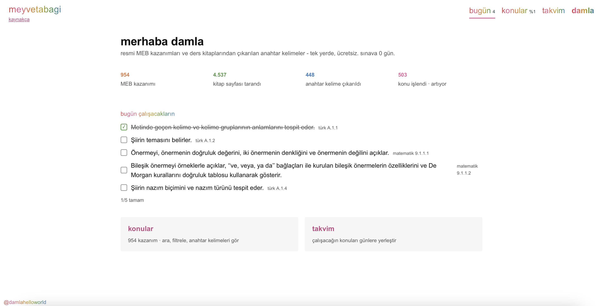
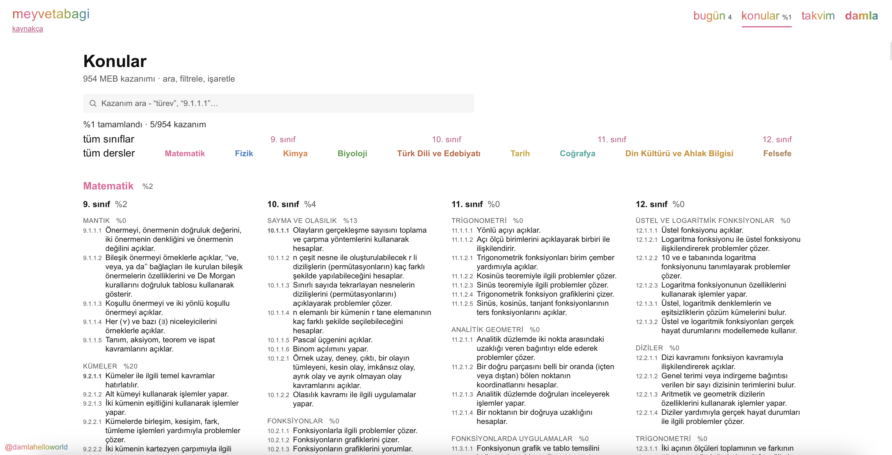
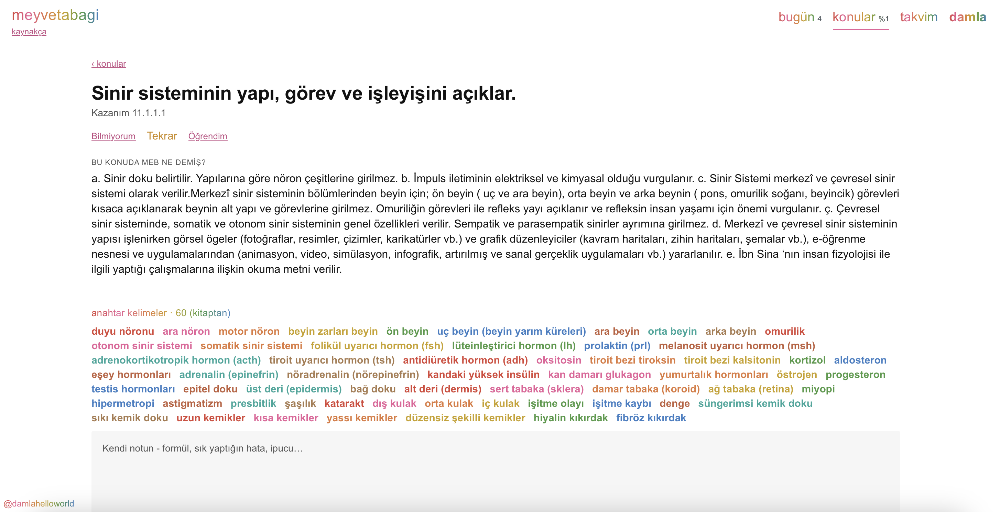
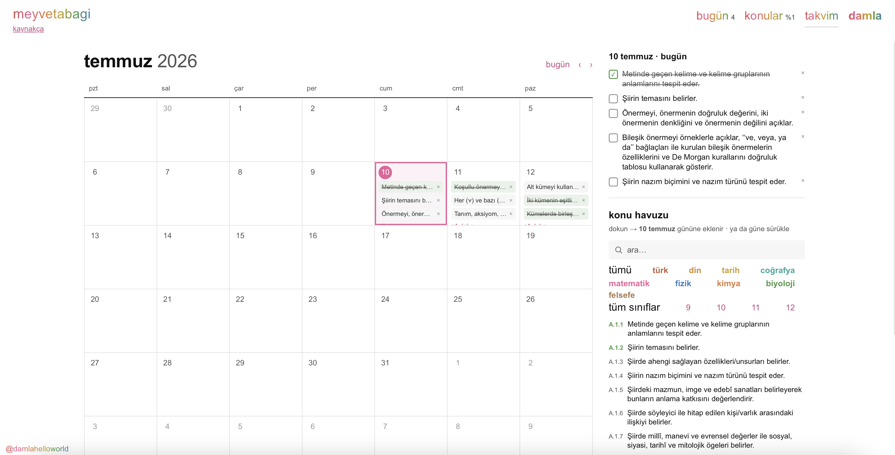
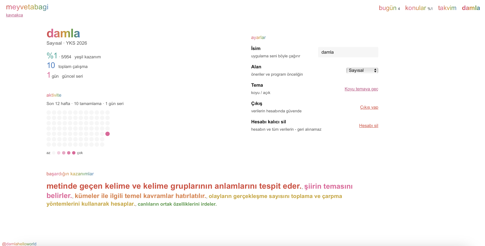

YKS'de bilerek çalış.
ne çalışacağını bilerek uyan.
tüm derslerin resmi MEB kazanımları, ders kitaplarından çıkarılan anahtar kelimeler ve çalışma takvimi, hepsi tek yerde. kayıt yok, reklam yok, ücret yok.
tarayıcıda açılır · hesap gerekmez · verin cihazında kalır
her ders o kadar kazanım. tıkla, filtrele, kırmızı sarı yeşil işaretle. her kazanımın altında MEB ders kitabından çıkarılmış anahtar kelimeler ve tanımları, kaynağıyla.
gerçek listeyi gör
9 dersin her sınıf, ünite ve kazanımı önünde. neyi bitirdin, neyi bitirmedin. renk sadece bunu söyler.
çalışacağını yerleştir
kazanımı bir güne bırak. gününe tıkla, program çıksın. eksik kaldıysa ileriye kayar.
her sabah aç
bugün ne var, kaç gün kaldı, biriken emeğin ne kadar. dağınıklık yok, tek ekran.
resmi kaynak. kazanımlar TTKB'nin 2026 YKS PDF'inden birebir. anahtar kelimeler 23 MEB ders kitabından çıkarıldı, hepsi kaynakça sayfasında. internetteki uydurma kazanım listelerini kullanmadık. verin senkron istersen sende kalır, silmek istersen tek tıkla gider.
Damla yaptı. Bilkent bilgisayar mühendisliği öğrencisi, YKS'yi iki kez kazandı. meyvetabagi bir hafta sonu projesi değil, kendi çalıştığı sistemi herkese açması. ürün büyüyecek, ama bugün bile işe yarıyor.
YKS'yi iki kez kazanmış biri olarak en çok şunu öğrendim: bu oyunun kural kitabını okumak her şeyden önemli. meyvetabagi o kural kitabını, resmi kazanım listesini, olduğu gibi önüne serer.





verini biz tutmuyoruz. işaretlediğin her şey senin tarayıcının hafızasında, localStorage'da kalır. localStorage, bir sitenin senin cihazında küçük bir defter tutması demek: sunucuya gitmez, bizde bir kopyası olmaz. istersen hesap açıp cihazların arasında eşitlersin, açmazsan hiçbir şey cihazından çıkmaz.
bu bağlar nasıl kuruldu? kazanımlar TTKB'nin resmi 2026 PDF'inden, anahtar kelimeler 23 MEB ders kitabından çıkarıldı. binlerce sayfayı tarayıp her kazanımın altına doğru terimleri yapay zeka ile bağladık, sonra hepsini kaynağına kadar izlenebilir bıraktık. uydurma yok, hepsi MEB'e dayanıyor.